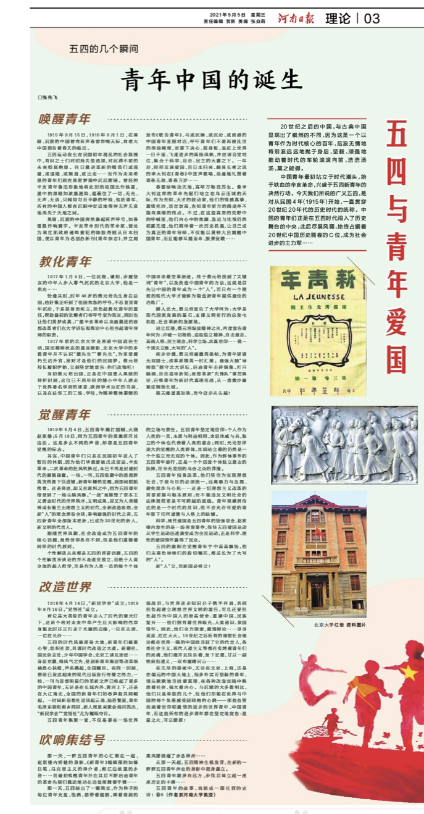

《河南日报》张先飞:青年中国的诞生
发布时间：2021-05-06 15:57:57 作者：张先飞

20世纪之后的中国，与古典中国显现出了截然的不同，因为这是一个以青年作为时代核心的百年，后浪无情地将前浪远远地抛于身后，坚毅、顽强地推动着时代的车轮滚滚向前，浩浩汤汤，莫之能御。
中国青年最初站立于时代潮头，始于铁血的辛亥革命，兴盛于五四新青年的决然行动。今天我们所说的广义五四，是对从民国4年（1915年）开始，一直贯穿20世纪20年代的历史时代的统称。中国的青年们正是在五四时代闯入了历史舞台的中央，此后尽展风骚，始终占据着20世纪中国历史画卷的C位，成为社会进步的主力军……
唤醒青年
1915年9月15日，1916年9月1日，在黑暗、沉寂的中国曾有两声春雷炸响天际，向老大中国预告着春天的临近。
五四运动发生在民国初年混乱的社会氛围中，有识之士们对时局失望透顶，对沉滞不前的未来彻底绝望。往日激进革新的精英们或逃避，或退隐，或颓废，或出走……而作为未来希望的青年们则在黑甜梦境中沉沉酣睡。曾经的辛亥青年鲁迅形象地将此时的祖国比作铁屋，屋中的黑暗如浓墨浸染，遮蔽住了一切，无光、无声、无语，只闻均匀而平静的呼吸，包括青年，所有的中国人都在沉眠中安适地等待无声无息地消失于天地之间。
黑暗、沉寂的中国突然暴起两声呼号，如春雷般炸响寰宇。辛亥革命时代的革命家、曾沦为袁世凯政府通缉要犯的陈独秀刚从日本归国，便以青年为名创办新刊《青年杂志》，并立刻发布《敬告青年》，与或沉睡、或沉沦、或困惑的中国青年直接对话，呼吁青年们不要再被乱世的浑浊掩埋，定要下决心、挺身板，追赶上世界一日千里、飞速进步的高扬风帆，并应该自觉站位，集合于科学、自由、民主的大纛之下。一年后，同样反袁爱国、自日本归来、颇具长者之风的李大钊在《青春》中放声歌唱，浪漫地礼赞着青春无敌、青春万岁……
春雷惊响动天地，高呼万物竞苏生。像李大钊这样的革命先驱们站立在乌云压城的天际，作为先知、天才的鼓动家，他们的情感真挚，激情充沛，语言崇高，告知青年前方的路途并不指向黑暗的终点。不过，在这些高昂的荒野中的呼喊里，他们内心中的焦躁、急迫与忧惧仍然袒露无遗，他们期待着一次历史机遇，让自己成为真正的青年导师，不仅能以黄钟大吕震醒中国青年，而且能够耳提面命、振聋发聩……
教化青年
1917年1月4日，一位沉稳、谦和，步履坚实的中年人步入暮气沉沉的北京大学，他是一束光……
恰逢其时，时年48岁的蔡元培先生身在法国，他好像正听到了祖国焦急的呼号，不忍直面青年沉沦，于是挺身而屹立，担负起教化青年的重任，帮助最初的觉醒者们将呼号变为现实，同时也让他们美梦成真，广邀辛亥革命以来最激进的思想改革者们在大学讲坛和舆论中心担当起青年导师的职责。
1917年前的北京大学是黑暗中国政治生活、国民精神状态的真实缩影，北京大学中的多数青年并不认识“德先生”“赛先生”，为享受腐朽生活升官、发财才是他们的民国梦。蔡元培校长履职伊始，立刻坚定地宣告：你们改悔吧！
当初蔡元培出国，正是在中国堕入黑暗的转折时刻，这位已不再年轻的矮小中年人游走于世界著名学府的课堂、欧洲学术巨匠的书房，以及在法华工的工场、学校，为精神整体萎缩的中国寻求着变革新途。终于蔡元培找到了关键词“青年”，以及改造中国青年的方法，这就是首先让中国的青年成为一个“人”，而只有一个理想的现代大学才能够为锻造新青年提供最佳的冶炼厂。
踏入北大，蔡元培宣告了大学何为：大学是现代国家发展的基石，支撑文明前行的总发电机组、社会革新的发源地。
站立红楼，蔡元培绽放精神之光，再度宣告青年何为：冲破一切桎梏，追取独立精神、自由意志、高尚人格、民主观念、科学立场、求真信仰……做一个顶天立地、大写的“人”。
疾步沙滩，蔡元培遍撒英雄帖，为青年延请无双国士，改革派精英一时汇聚。最强大脑“导师组”据守北大讲坛，启迪青年击碎偶像、打开脑洞、自由追寻新知；思想革新“先锋队”掌控舆论，召唤青年为新时代真理而战，从一盘散沙凝聚成钢铁长城。
雄关漫道真如铁，而今迈步从头越！
觉醒青年
1919年5月4日，五四青年痛打国贼、火烧赵家楼；5月18日，同为五四青年的梁漱溟斥其违法。这是多么不同的声音，却都是五四青年觉醒的标志。
其实，中国青年们只是在民国初年进入了暂时的休眠，因为他们毕竟曾被戊戌变法、辛亥革命、二次革命的狂风吹拂过，本已不再是封建时代的腐儒禄蠹。一校、一刊，五四浪潮中的思想群英突然摁下快进键，新青年幡然觉醒，刹那间脱胎换骨。这是奇迹，却又在意料之中，因为五四青年接受到了一场头脑风暴。“一战”虽摧毁了资本主义黄金时代的世界秩序、文明成果，却又为人类精神成长催生出理想主义的时代，全新改造思想，全新“人”的观念席卷全球，奏响最强的时代之音，五四新青年全部版本更新，已成为20世纪的新人，新文明的代言人。
跟随世界风潮，社会改造成为五四青年的核心话题，虽然信仰各自不同，但是他们遵循着同样的时代原则。
个性解放从来都是五四的首要话题，五四的个性解放所谈论的并不是遗世独立、自绝于人类全体的超人哲学，而是作为人类一员的每个个体的立场与责任。五四青年坚定地信仰：个人作为人类的一员，本质与利益相同，命运休戚与共，独立的个体也代表着人类的意志；同时，无论怎样庞大的觉醒的人类群体，其间站立着的仍然是一个个独立而无双的个体。因此，作为群体事件的五四青年游行，正是一个个活泼个体独立意志的抉择，而非无差别的乌合之众的莽撞。
五四青年投身改革，他们坚信为实现理想社会，手段与目的必须统一，远离暴力与血腥，避免诡诈与心机……这是一切理想主义改革的首要前提与根本原则；而不能违反文明社会的法律规范更是不可跨越的底线。青年梁漱溟传达的是一个时代的共识，他不会允许可爱的青年留下任何道德与人格上的缺憾。
科学、理性爱国是五四青年的坚强信念，赵家楼内发生的是一场突发事件，很快五四爱国运动从学生运动迅速演变成为全民运动，正是科学、理性的爱国情怀赢得了民众。
五四的旗帜在觉醒青年手中高高飘扬，他们未辜负导师们的殷切嘱托，都成长为了大写的“人”。
新“人”立，而新国必将立！
改造世界
1918年4月14日，“新民学会”成立；1919年9月16日，“觉悟社”成立。
两位高大英俊的青年走入了时代的聚光灯下，这两个将对未来中华产生巨大影响的伟岸身躯此时还正行走于光圈的边缘，一位在天津、一位在长沙……
五四的时代风暴席卷大地，新青年们凝聚心智，组织社团，共谋时代改造之大道。新潮社、国民杂志社、少年中国学会、北京工读互助团……身居京畿，得风气之先，受到新青年集团等改革领袖悉心扶植，声名鹊起，全国瞩目。在同一时刻，借助已发达起来的现代出版发行传播之伟力，一校、一刊与思想明星们的革新之声已唤起了更多的中国青年，无论是在长城内外、黄河上下，还是在大江南北，全国的新青年们如春笋般共同崛起。一时间新思想社团风起云涌、灿若繁星，青年毛泽东领衔湘乡同好，新人周恩来聚会海河英杰，“新民学会”“觉悟社”尤为耀眼夺目。
五四青年集聚一堂，不仅是要在一场世界混战后，与世界进步知识分子携手并肩，共同担负起建立理想世界文明的重任，而且还要担负起作为中国人的崇高使命：重建中国、民族复兴……他们拥有着世界眼光、人类意识、家国情怀。因此，他们全力探索，激情辩论……寻寻觅觅、红红火火。19世纪之后所有的理想社会理论都在世界一隅的中国找寻到了它的代言人，各类社会主义、现代人道主义等都在炙烤着青年们的灵魂，他们痛并且快乐着，发下宏愿，甘以一副铁肩担道义，一双布履踏河山……
在无尽的暗夜中，无论在北京、上海，还是在偏远的中国大地上，很多朴实而坚毅的青年，埋头默默地寻找着真理，在各种改造实践中熟悉着社会、强大着内心。与沉默的大多数相比，他们只是单独的几个，但他们却能在世界与中国的每个角落感受到同袍的心跳——那些血管流淌着信仰和激情的进步的世界青年、中国青年，而这些所有的进步青年都在坚定地宣告：星星之火，可以燎原！
吹响集结号
那一天，一群五四青年的心汇聚在一起，赵家楼内矫健的身影、《新青年》编辑部的如椽巨笔、马克思主义的译介者、湘江边浓重的乡音……而最初唤醒青年并在其后不断启迪青年的革命先驱们激动地站在远处挥舞着手臂……
那一天，五四结出了一颗果实，作为种子的每位青年充盈、饱满，都带着翅膀，乘着南湖的熏风播洒遍了赤县神州……
从那一天起，五四精神生根发芽，在新的一群群五四青年奔走的身影中挺身矗立。
五四青年跋涉向远方，步伐后耸立起一座座历史的丰碑……
五四青年的故事，流淌成一部壮丽的史诗！
（作者系民革河南大学支部主任委员、《河南大学学报》编辑部副主编、第十二届开封市政协常委）